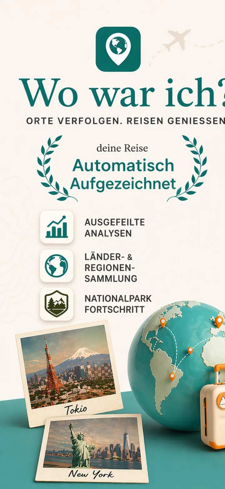
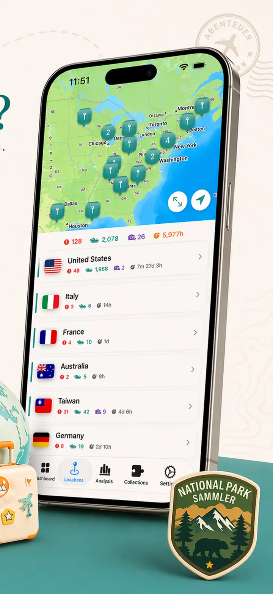
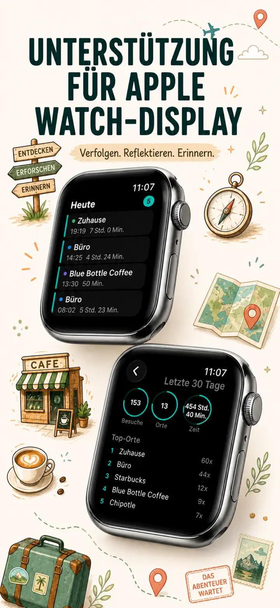
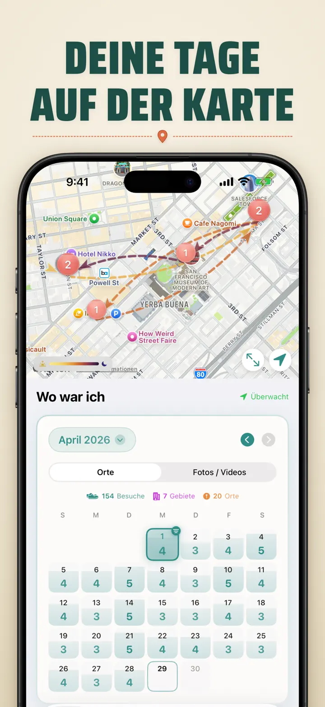
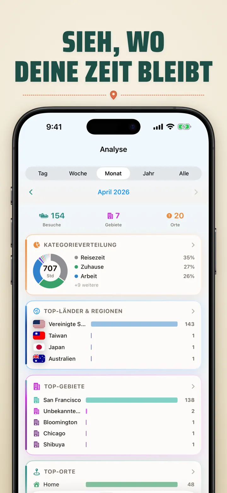
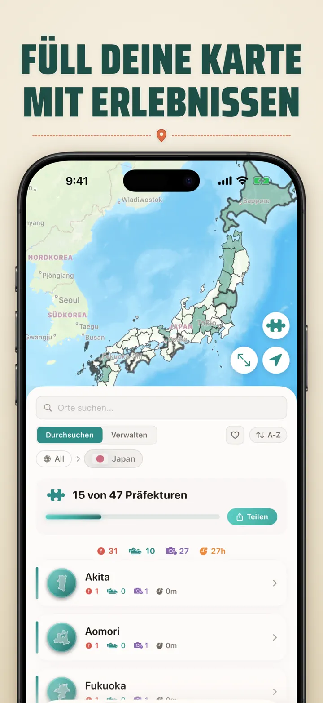
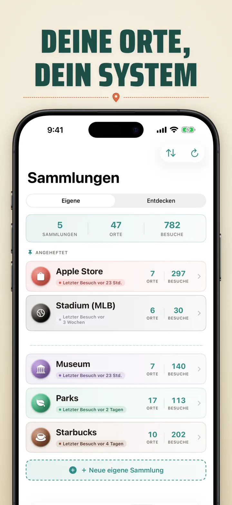
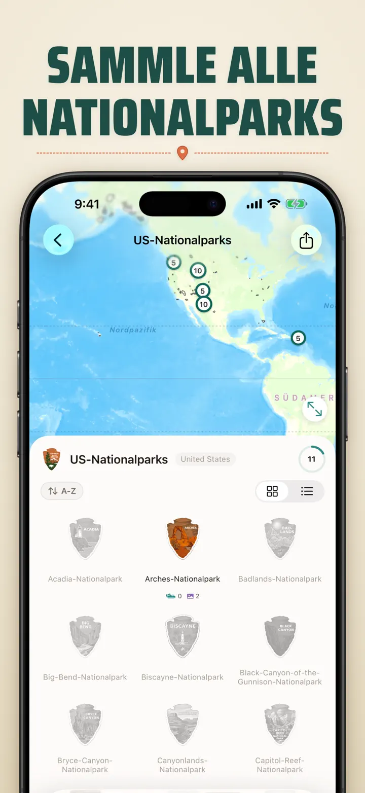
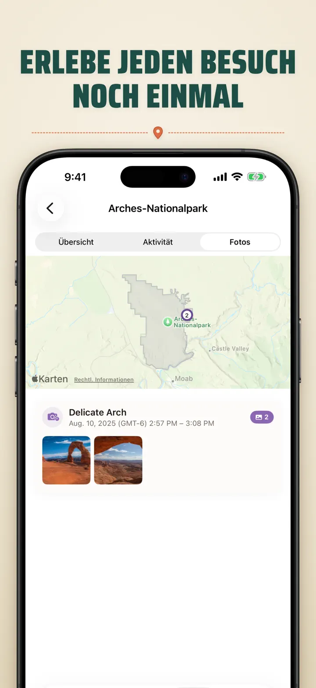

Wo war ich??
Orte, Fotos & Fortschritt
Neu: Japans 103 Ichinomiya-Schreine, jeder mit eigenem geschnitztem Abzeichen. Automatische Erfassung und eine private Zeitleiste, alles auf deinem Gerät.
Im App Store laden
Über die App
Where was I ? — Dein persönliches Standort-Gedächtnis
Schon mal versucht, dich an das tolle Restaurant vom letzten Monat zu erinnern? Where was I ? erfasst automatisch deine Besuche und erstellt eine schöne Zeitleiste deiner Lebensreise.
AUTOMATISCHE ERFASSUNG
Kein manuelles Protokollieren nötig. Die App zeichnet leise auf, wann du an Orten ankommst und sie verlässt, und erstellt mühelos eine detaillierte Besuchshistorie.
INTELLIGENTE KALENDERANSICHT
Sieh deine Besuche nach Tag, Woche oder Monat geordnet. Der Kalender zeigt Besuchszahlen und Orte auf einen Blick. Tippe auf einen Tag, um zu sehen, wo du warst.
HOME- & SPERRBILDSCHIRM-WIDGETS
Sieh deine letzten Besuche mit dem mittleren Home-Widget. Sperrbildschirm-Widgets zeigen deinen aktuellen Ort, einen Live-Aufenthalts-Timer oder die heutige Besuchsanzahl — alle antippbar, um direkt in die App zu springen.
ORGANISIERTE STANDORTE
Standorte werden automatisch nach Region und Stadt gruppiert. Weise eigene Kategorien wie Zuhause, Arbeit, Fitnessstudio oder Café zu. Erstelle eigene Kategorien mit individuellen Symbolen und Farben.
LEISTUNGSSTARKE ANALYSEN
Entdecke Muster in deinem Leben:
- Zeitverteilung über Kategorien
- Deine meistbesuchten Orte
- Wochenrhythmus-Analyse
- Besuchshäufigkeitstrends
- Aufenthaltsdauer-Chart pro Ort — sieh, wie lange du bleibst, nach Tag, Woche, Monat oder Jahr
LÄNDER-REGIONEN-SAMMLUNG
Mach aus deinen Reisen ein Puzzle! Sieh, wie viele Bundesstaaten oder Regionen du je Land besucht hast. Teile als Puzzle-Bild.
NATIONALPARK-FORTSCHRITT
Erkunde die Natur! Protokolliere automatisch deine Nationalpark-Besuche.
DIE 100 BERÜHMTEN BURGEN JAPANS
Auf Japan-Reise? Eine neue Sammlung erfasst deine Besuche der 100 berühmten Burgen des Landes. Im Sammlung-Tab unter Entdecken → Japan.
EIGENE SAMMLUNGEN
Sammle, was du willst — Apple Stores, Museen, Brauereien. Lege eine Sammlung an, setze Stichwörter und sie füllt sich automatisch. Anzahl, Besuchsverlauf und Karte je Sammlung.
STANDORTVERLAUF IMPORTIEREN
Kommst du von einer anderen App? Bring deinen gesamten Verlauf mit — das Format wird automatisch erkannt, große Exporte werden verarbeitet, und du siehst eine Vorschau, bevor etwas importiert wird:
- Google Timeline (Google Maps-Export oder Google Takeout)
- Arc Timeline (die monatlichen .json-Dateien, die du aus Arc exportierst)
- Moves (ProtoGeo / Facebook Moves-Backup)
MASSENVERWALTUNG
Verwalte alle deine Standorte an einem Ort. Suchen, sortieren, filtern. Wähle mehrere Standorte aus, um sie gesammelt zu kategorisieren oder zu löschen.
DATENSCHUTZ ZUERST
Deine Standortdaten bleiben auf deinem Gerät. Kein Konto erforderlich. Keine Datenübertragung an Server.
PERFEKT FÜR:
- Arbeitszeiten und -orte erfassen
- Restaurants und Geschäfte merken
- Tägliche Routinen analysieren
- Reisetagebuch und Nationalparks
- Spesen und Kilometer
FUNKTIONEN:
- Automatische Ankunfts- und Abfahrtserkennung
- Kalenderansicht mit täglicher Besuchszeitleiste
- Home- und Sperrbildschirm-Widgets mit Deep-Linking
- Standortgruppierung nach Region und Stadt
- Eigene Kategorien mit Symbolen und Farben
- Intelligente Kategorievorschläge von Apple Maps
- Detaillierte Besuchshistorie mit Dauer
- Aufenthaltsdauer-Chart pro Ort (Tag / Woche / Monat / Jahr)
- Analyse-Dashboard mit Einblicken
- Standorte suchen und filtern
- Länder-Regionen-Sammlung mit teilbarem Puzzle-Bild
- Nationalpark-Fortschritts-Tracking
- Eingebaute Sammlung „Die 100 berühmten Burgen Japans"
- Eigene Sammlungen mit Stichwort-Abgleich, manueller Bearbeitung und Statistiken
- Massenverwaltung von Standorten
- Import aus Google Timeline, Arc Timeline und Moves
- Exportfunktionen
- Kein Konto erforderlich
- Datenschutzorientiertes Design
Beginne heute, dein Standort-Gedächtnis zu bauen. Lade Where was I ? und vergiss nie, wo du warst.
Privacy Policy: https://masawata.net/privacy-policy.html Terms Of Service: https://www.apple.com/legal/internet-services/itunes/dev/stdeula/
Screenshots








Wo war ich??
Neu: Japans 103 Ichinomiya-Schreine, jeder mit eigenem geschnitztem Abzeichen. Automatische Erfassung und eine private Zeitleiste, alles auf deinem Gerät.
Im App Store laden